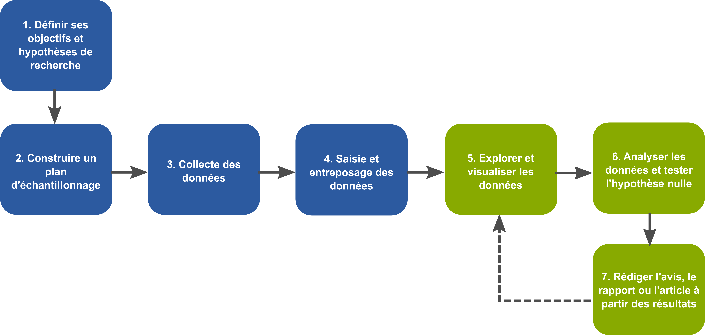

- Ces diapositives sont disponibles en version web et en PDF.
- L'ensemble du matériel de cours est disponible sur la page du portail moodle.
Séance 1: Introduction
BIO 500 - Méthodes en écologie computationnelle
Dominique Gravel
Laboratoire d'écologie intégrative
Séance 1
Retour sur les bonnes pratiques de programmation
La crise de la reproductibilité
L'importance de la reproductibilité.
Certaines de ces situations peuvent survenir lors de votre carrière professionnelle:
Situation 1. Un employeur souhaite que vous réaliser les même analyses 3 ans plus tard sur des données difféntes.
Situation 2. Vous avez commis une erreur dans votre saisie, vous devez reconduire vos analyses.
Situation 3. Un des réviseurs de votre article scientifique vous demande de refaire vos analyses en tenant compte d'une nouvelle variable environnemnale.
Définition de la reproductibilité.
Présentation du cours BIO500
La démarche scientifique classique
Ce cours repose en partie sur les étapes de travail d'un biologiste

Les étapes de travail d'un biologiste
Certaines étapes intermédiaires sont souvent oublié.

L'importance de la reproductibilité.
Les résultats obtenus sont souvent le résultat d'un long processus itératif.
